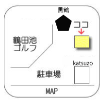
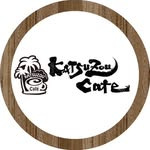
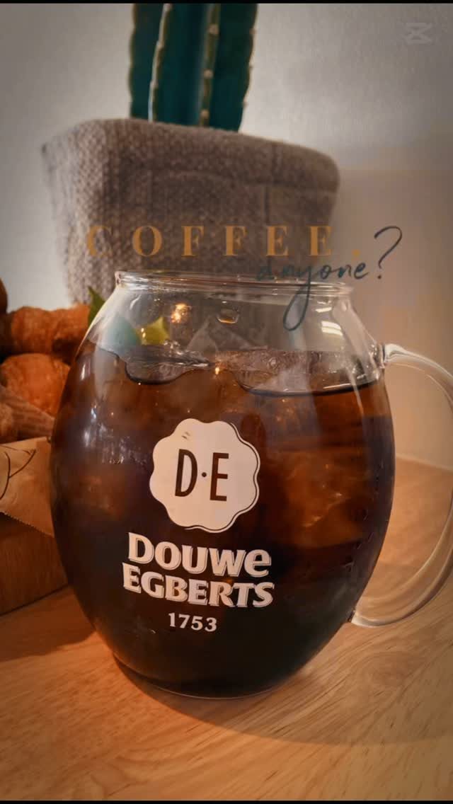

アフターゴルフ工房
営業中
当センターに隣接するアフターゴルフ工房。
クラブの修理・リペア、その他ゴルフクラブに関する
あらゆるトラブルを解決いたします。
 アフターゴルフ工房 外観
アフターゴルフ工房 外観

駐車場内の場所こんなお悩みはありませんか？
- シャフトが曲がってしまった！
- クラブが古くて傷だらけ…
- 重量・角度・バランスがしっくりこない！
お問合せ・ご予約
072-273-6600
NOW OPEN


 📷 Instagram @katsuzou.cafe
📷 Instagram @katsuzou.cafe
katsuzou cafe（カツゾウカフェ）
ゴルフの前後に、寛ぎのひとときを。

鶴田池ゴルフセンター敷地内に誕生した、緑あふれる癒しのカフェ。
白と木を基調としたナチュラルな店内は、大きな窓から自然光が差し込む開放的な空間。
創業270年以上のオランダ老舗ブランド「ダウエグバーツ」の珈琲とともに、ゆったりとした時間をお過ごしください。

こだわりの珈琲・紅茶
ダウエグバーツ珈琲のほか、高級茶葉 Mighty Leaf を使用した紅茶もお愉しみください。
45パターン以上のモーニング
トースト・ドッグ・ハーフ＆ハーフ、たまごの調理法も選べる充実のモーニング。550円〜。
フリーWi-Fi・コンセント完備
テレワークや勉強にもぴったり。ゆっくりと過ごせる心地よい空間です。
テイクアウトOK
ドリンク・フードはすべてテイクアウト対応。練習前の一杯にも。
OTHER FACILITIES — 2027 RENEWAL OPEN
エントランス・フロント
明るいフロントでお客様をお出迎えします。
打 席
最長300ヤード・全100打席。ふかふかカーペットの快適打席。
ゴルフ用品
センター内にゴルフパートナー販売店常設。充実の品揃え。
その他施設
ロッカールーム・全自動ウォシュレット・館内フリーWifi完備。